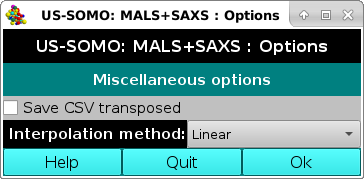
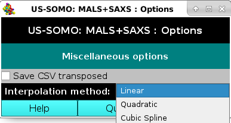

| |
Manual |

This Options currently has only two entries, both under the label Miscellaneous options.

Linear, Quadratic, and Cubic spline (Default: Linear).
This document is part of the UltraScan Software Documentation
distribution.
Copyright © notice.
The latest version of this document can always be found at:
Last modified on September 24, 2024